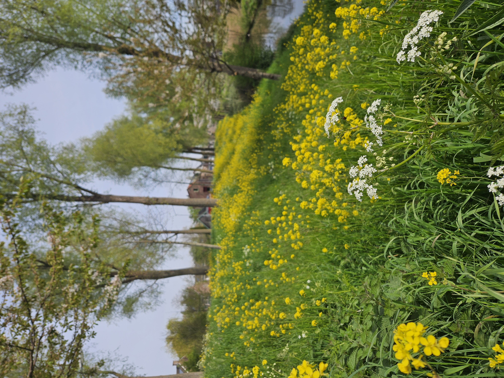

Eind april bezochten de opzichter Groen van de gemeente en aannemer A-Garden op uitnodiging van de Stichting ons stukje dijk. Doel: de bestaande afspraken over onderhoud en biodiversiteit ook voor 2026 concreet vastleggen.
Een belangrijk resultaat van het overleg is dat de brug Crabbeheul voortaan officieel als "hot spot" is opgenomen in het onderhoudsbestek. In het verleden bleek namelijk dat een te hoge heg rondom de brug voor problemen zorgde: er ontstonden plaatsen die volledig uit het zicht stonden, wat ongewenste activiteiten aantrok. Bovendien leidde overwoekering tot een nauwe doorgang op de brug en brandnetels langs de randen.
Met de gemaakte afspraken hopen we samen met gemeente en aannemer ook in 2026 te zorgen voor een veilige, verzorgde en biodiverse Zuidendijk.
Om dit te voorkomen zijn er momenteel twee snoeibeurten per jaar gepland — in de week van 25 mei en opnieuw in september. De gemeentelijk opzichter gaat bovendien onderzoeken of er een extra onderhoudsronde mogelijk is in januari of februari.
Er zijn ook heldere afspraken gemaakt over het maaibeleid, met nadrukkelijke aandacht voor biodiversiteit. De strook langs het asfalt — enkele weken geleden al keurig gemaaid — zal voortaan zes keer per jaar worden gemaaid, tot aan de bomenrij. Het talud wordt twee keer per jaar gemaaid: telkens een helft tegelijk. Het onderste deel in mei/juni, het bovenste deel in september/oktober. Maaien gebeurt in een golvende beweging, zodat de berm zijn natuurlijke uitstraling behoudt.
Strook langs asfalt
6× per jaar gemaaid, tot aan de bomenrij
Talud (helling)
2× per jaar — mei/juni onderste deel, sept/okt bovenste deel
Brug Crabbeheul
Hot spot in bestek — 2 snoeibeurten + mogelijk extra in jan/feb
Maaiwijze
Golvende beweging voor een natuurlijke en biodiverse uitstraling

Tot slot is er ook naar de bomen op de dijk gekeken. Tussen huisnummer 319 en 321 is een zieke boom geconstateerd die nader in de gaten gehouden wordt. Daarnaast is er een forse bos opschot in de sloot gezakt; dit wordt te zijner tijd verwijderd.
De Stichting is tevreden met de gemaakte afspraken en blij met de constructieve samenwerking met gemeente en A-Garden. Zo werken we samen aan een Zuidendijk waar het prettig en veilig wonen, wandelen en natuur beleven is.